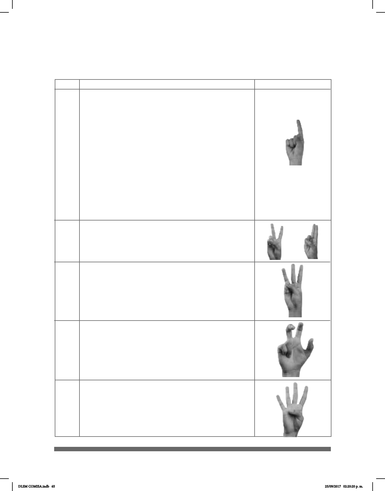

65
Tipos de Clasicadores en la LSM
CL USO Y SIGNIFICADO
• Una persona en posición vertical que se
desplaza o se mantiene parada en un lugar.
Siempre aparece con la punta del dedo índice
hacia arriba.
• Marca límites de líquidos en contenedores.
IMAGEN
La siguiente tabla resume el uso y significado de diferentes clasificadores:
1
2 o U
• Se reere a objetos alados: navajas y
cuchillas.
• Dos personas en posición vertical que se
desplazan juntas.
• Se reere a perímetros de objetos
rectangulares, triangulares, cuadrangulares.
• Grupo de tres personas en posición vertical
que se desplazan o se encuentran en algún
lugar.
3
• Entidad movible, animales de cuatro patas que se
desplazan o se encuentran en algún lugar.
...
3
• Grupo de cuatro personas en posición vertical
que se desplazan o se encuentran en algún
lugar.
4
DLSM COMISA.indb 65 25/09/2017 02:20:20 p. m.